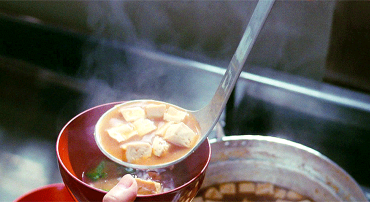

Miso Soup

A slice-of-life
Miso soup is a staple in Japanese cuisine and the Soup for the Soul.
Ingredients
- 4 cups of vegetable broth (use dashi for more traditional miso soup)
- 1 sheet nori
- 45-60g white or yellow miso paste (fermented soy bean or chickpea paste)
- 32g chopped green chard or other sturdy green
- 50g chopped green onion
- 62g firm tofu (cubed)
Instructions
- Place vegetable broth in a medium sauce pan and bring to a low simmer.
- In the meantime, place miso (starting with lesser end of range) into a small bowl,
add a little hot water and whisk until smooth. This will ensure it doesn't clump when
added to the soup later. Set aside.
- To the broth add chard (or other greens of choice), green onion, and tofu
(if using silken, add at the end of cooking) and cook for 5 minutes. Then add
nori and stir. Remove from heat, add miso mixture, and stir to combine.
- Taste and add more miso or a pinch of sea salt if desired. Serve warm. Best when fresh.
Return to top.
Return to the main page.